普通市民
巴纳吉·林克斯【BANAGHER LINKS】（バナージ·リンクス） CV：内山昂辉 年龄：16岁 本作的主人公，卡帝亚斯·毕斯特亲生儿子，因其母不愿意他卷入毕斯特家族的命运在其年少时由其母亲带领离开毕斯特家族前往其它移民星系居住。后因为母亲的死亡，被未曾相见过的父亲安排进入阿纳海姆下属学校学习。后与神秘少女奥黛莉·本（Audrey Burne）（米妮瓦·扎比）相遇，卷入了“拉普拉斯之盒”的事件之中。最后的神棍结局中精神脱离了肉身与精神感应结合（就是进化到了不需要肉体的纯思维生命形态），但是最后自己认为“不能放弃巴纳吉·林克斯这个肉体”而恢复了原貌。 |
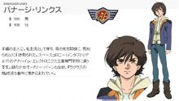 |
奥黛莉·本【Audrey Burne】（オードリー·バーン）/米妮瓦·扎比 |
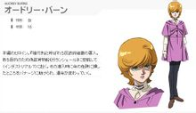 |
拓也·伊礼【Takuya Irei】（タクヤ·イレイ） |
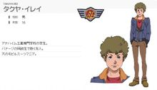 |
米寇特·巴奇【Micott Bartsch】（ミコット·バーチ） |
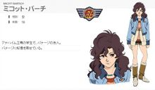 |
新吉翁残党军“带袖的”
|
弗尔·伏朗特【Full Frontal】（フル·フロンタル） |
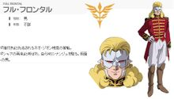 |
玛莉妲·库鲁斯【Marida Cruz】（マリーダ·クルス） |
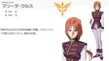 |
安杰洛·梭餥【Angelo Sauper】（アンジェロ·ザウパー） |
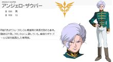 |
斯贝洛亚·辛尼曼【Suberoa Zinnerman】（スベロア·ジンネマン） |
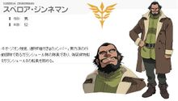 |
奇波亚·桑特【Gilboa Sant】（ガエル·チャン） |
|
弗拉斯特·斯考尔【Flaste Schole】（フラスト·スコール） |
|
毕斯特财团（ビスト一族）
卡帝亚斯·毕斯特【Cardeas Vist】（カーディアス·ビスト） |
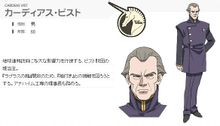 |
赛亚姆·毕斯特【Syam Vist】（サイアム·ビスト） |
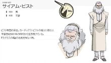 |
盖尔·张【Gael Chan】（ガエル·チャン） |
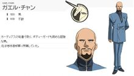 |
亚伯特·毕斯特【Alberto Vist】（アルベルト·ビスト）33岁(CV：高木渉) |
|
玛莎·毕斯特·卡拜因（マーサ·ビスト·カーバイン）55岁 |
|
地球联邦军
利迪·马瑟纳斯【Riddhe Marcenas】（リディ·マーセナス） |
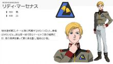 |
美寻·奥伊瓦肯【Mihiro Oiwakken】（ミヒロ·オイワッケン） |
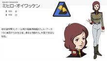 |
奥特·米塔斯（オットー·ミタス） |
|
蕾亚姆·巴林尼亚（レイアム·ボーリンネア） |
|
塔克萨·马克尔（ダグザ·マックール） |
|
布莱特·诺亚[港译：林有德]【Bright Noa】（ブライトノア） |
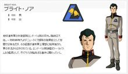 |
吉翁共和国
摩纳汗.巴哈罗(モナハンバハロ) 吉翁共和国的国防部长，为人阴险。他表面上对联邦俯首帖耳，执行“UC0100年，吉翁政权彻底结束”的方针大政。但是在背地里又组织了吉翁残党军“戴袖的”，并长期出资支援，还派出弗朗托以“夏亚再世”的面貌出现以邀买人心。又煽动吉翁共和国国防军中忠于旧吉翁公国的部队成立地下反联邦组织“风之会”。拟阿卡玛前往盒子的埋藏地--工业七号之时，他派风之会前往拦截。风之会和“戴袖的”两支部队全部失败后，已无筹码的摩纳汗又恬不知耻地联络玛莎希望合作。但是他与玛莎同为失败者，联手已经没有意义，其野心彻底失败。 |
|